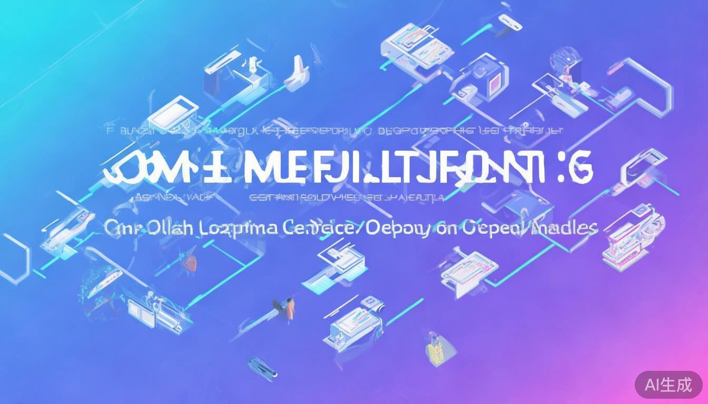

大模型微调与私有化部署
本章将帮你打破大模型“只能用公有API、数据要外传、无法定制业务逻辑”的限制，掌握从本地开源模型一键部署、参数高效微调，到显存优化、成本可控的私有化落地全流程。学完你可独立搭建专属领域大模型，在普通消费级显卡上完成定制化部署，满足企业数据合规要求。
为什么需要微调与私有化
公有大模型API存在三个不可忽视的落地痛点：一是数据合规风险，企业内部文档、客户对话、业务流程等敏感数据上传第三方平台，可能违反《数据安全法》等监管要求；二是定制化能力不足，通用模型对垂直领域（如法律条文、企业SOP、医疗术语）的理解准确率通常低于60%，且无法固化专属回答风格；三是长期成本不可控，高并发场景下按token计费的API支出，1年即可超过本地部署的硬件投入。
私有化部署+微调的组合方案可以完美解决上述问题：私有化部署保证所有数据流转都在企业内网完成，满足等保三级以上的合规要求；微调则可以在不改动模型基础能力的前提下，用几百到几千条业务数据，让模型掌握专属知识与输出规范，领域任务准确率可提升至90%以上。对于个人开发者而言，这套方案也能让你在单张消费级显卡上，拥有完全可控的私人AI助手，无需依赖任何付费服务。
Ollama 一键本地部署开源模型

Ollama是目前门槛最低的开源大模型本地部署工具，支持Windows、macOS、Linux全平台，自动完成模型下载、显存分配、服务启动全流程，无需手动配置CUDA、Python依赖等复杂环境。你只需在官网下载对应系统的安装包，完成安装后打开终端，即可通过一行命令拉取并运行模型，比如运行7B参数的通义千问2开源版本，仅需执行ollama run qwen2:7b，工具会自动匹配你的硬件配置，在8G显存的显卡上即可流畅运行。
除了基础模型运行，Ollama还支持自定义Modelfile来调整模型参数，比如设置系统提示词、上下文窗口大小、推理温度系数。你可以创建一个名为Modelfile的文件，写入如下配置后执行ollama create my-assistant -f Modelfile，即可生成专属定制的本地模型：
# 基于qwen2:7b基础模型定制
FROM qwen2:7b
# 设置固定系统提示词
SYSTEM "你是白驹AI学院的专属助教，回答需简洁专业，优先给出可操作步骤"
# 设置上下文窗口为8k，温度0.7（平衡创造性与准确性）
PARAMETER num_ctx 8192
PARAMETER temperature 0.7Ollama默认会将模型缓存到本地，首次拉取后后续启动仅需几秒，支持大量主流开源模型（通义、Llama、Mistral、Gemma 等系列），参数规模从小到几十 B 都有 —— 具体可用列表与版本以 Ollama 官方模型库当前页面为准，本文不锁死某几个型号：
| 模型参数规模 | 最低显存要求（量化后） | 适用场景 |
|---|---|---|
| 1.8B-3B | 4G | 简单问答、嵌入式设备 |
| 7B-9B | 8G | 个人助手、常规业务处理 |
| 14B-22B | 16G | 复杂推理、垂直领域应用 |
| 70B+ | 40G+ | 高准确率企业级场景 |
通过API调用本地模型
Ollama启动后会默认在本地11434端口暴露RESTful API，兼容OpenAI API格式，你可以直接用OpenAI的Python SDK、LangChain等框架对接，无需修改原有基于公有API开发的业务代码。这意味着你之前写的调用 OpenAI 或 DeepSeek 接口的应用，仅需修改base_url和api_key（本地部署无需真实密钥，随便填即可），就能无缝切换到本地私有模型。
最基础的聊天补全接口调用示例如下，你可以直接在Python环境中运行，注意提前安装openai依赖：pip install openai：
from openai import OpenAI
# 连接本地Ollama服务，api_key可随意填写
client = OpenAI(base_url="http://localhost:11434/v1", api_key="ollama")
response = client.chat.completions.create(
model="qwen2:7b", # 对应你本地已拉取的模型名
messages=[{"role": "user", "content": "解释什么是大模型微调，用3句话说明"}],
temperature=0.3,
stream=False # 设为True可开启流式输出
)
print(response.choices[0].message.content)除了单轮对话，API还支持多轮对话上下文传入、嵌入向量生成、函数调用等能力，你可以将本地模型接入自己的知识库系统、客服机器人、办公插件等场景。如果需要让局域网内其他设备访问本地模型，只需在启动Ollama时设置环境变量OLLAMA_HOST=0.0.0.0，即可开放局域网访问权限，无需额外部署网关服务。
LoRA/QLoRA 参数高效微调原理
全参数微调需要更新模型的所有参数，以7B模型为例，全参数微调仅参数存储就需要14GB以上的显存，加上梯度、优化器状态，总显存需求超过80GB，普通消费级显卡根本无法承载。而参数高效微调（PEFT）技术仅需更新极少量的模型参数，就能达到和全参数微调接近的效果，其中LoRA（低秩适配）是目前应用最广的方案，它的核心原理是在模型的注意力层插入两个低秩矩阵，训练时只更新这两个矩阵的参数，原有模型参数完全冻结。
LoRA的核心逻辑是：大模型的权重更新本质是低秩的，也就是权重变化的信息可以用两个更小的矩阵乘积来表示，不需要更新完整的权重矩阵。比如原来的注意力层权重尺寸是4096*4096，我们插入两个秩为8的矩阵，尺寸分别是4096*8和8*4096，总参数量仅为4096*8*2=65536，不到原层参数量的0.1%，训练时的显存需求可以降低到全参数微调的1/10以下。训练完成后，两个低秩矩阵可以直接合并到原模型权重中，推理时没有任何额外延迟。
QLoRA是在LoRA基础上进一步优化的量化微调方案，它将原模型的权重量化为4bit精度存储，训练时再将权重反量化进行计算，同时配合分页优化器处理长序列的显存峰值，进一步将微调的显存门槛降低：7B模型的QLoRA微调仅需6G以上显存，14B模型仅需10G显存，普通游戏显卡即可完成。QLoRA的微调效果和全参数微调的差距通常在1%以内，完全可以满足绝大多数业务场景的需求，是目前个人和中小企业微调大模型的首选方案。
微调数据准备与格式
微调的效果90%取决于数据质量，很多人微调后模型效果变差，核心原因是数据质量差、格式不规范，而不是参数设置问题。高质量的微调数据需要满足三个要求：一是和目标场景高度匹配，比如你要做法律客服，就不要用通用闲聊数据；二是答案质量高于基础模型的原有输出，如果你给的答案比模型自己生成的还差，微调反而会降低模型能力；三是格式统一，遵循模型对应的对话模板，否则会导致模型学习到错误的输出逻辑。
目前通用的微调数据格式是对话ShareGPT格式，每条数据包含多轮对话的messages数组，每个message包含role（system/user/assistant）和content两个字段，你可以将数据保存为json文件，示例如下：
[
{
"messages": [
{"role": "system", "content": "你是电商售后客服，回答需礼貌，优先给出退换货解决方案"},
{"role": "user", "content": "我买的鞋子穿了3天开胶了，怎么处理？"},
{"role": "assistant", "content": "非常抱歉给您带来不好的体验，您可以直接在订单页申请退换货，我们承担来回运费，同时给您发放10元无门槛优惠券作为补偿。"}
]
}
]数据准备阶段需要注意几个核心细节：一是数据量不需要盲目求多，垂直场景100-1000条高质量数据即可达到很好的效果，超过1万条数据后边际收益会快速下降；二是要做数据去重和错误清洗，删除重复、答非所问、包含敏感内容的样本；三是系统提示词要统一，不要同一份数据里出现多个不同的系统提示，避免模型学习混乱。如果没有足够的业务数据，你也可以先用 GPT-6.1 Sol、DeepSeek V4-Pro 等强模型生成种子数据，再人工校验修正，大幅降低数据标注成本。
用 LlamaFactory 微调 Qwen 实战
LlamaFactory 是常用的开源大模型微调框架之一，集成了LoRA、QLoRA等所有主流微调方法，支持Qwen、Llama3等上百种开源模型，提供WebUI界面，无需手写复杂的训练代码，点选即可完成微调全流程。你可以先克隆官方仓库，安装依赖：git clone https://github.com/hiyouga/LLaMA-Factory.git && cd LLaMA-Factory && pip install -e .[metrics]，安装完成后执行python src/train_web.py即可启动可视化微调界面。
以微调Qwen2-7B模型为例，你可以按如下步骤操作：首先在模型选择栏选qwen2-7B，微调方法选lora，量化等级选4bit（对应QLoRA）；然后在数据配置栏上传你准备好的ShareGPT格式数据集，设置训练轮次为3轮，学习率设为2e-4，LoRA秩设为8，批处理大小设为2（根据显存调整，显存不够就把批处理大小改小，开启梯度累积）；最后点击开始训练即可，8G显存的显卡大概1-2小时即可完成1000条数据的微调。
训练完成后，你可以直接在WebUI的“聊天”板块加载训练好的LoRA权重，测试模型输出效果，如果效果符合预期，可以点击“导出”按钮，将LoRA权重合并到基础模型中，导出为完整的HuggingFace格式模型，后续可以直接转换为GGUF格式用Ollama部署。如果训练过程中出现显存不足的报错，可以适当减小批处理大小、降低LoRA秩、缩短序列长度，不要盲目增加硬件投入。
模型量化与显存优化
模型量化是指将模型权重从默认的16bit浮点数，转换为更低精度的数值（如8bit、4bit），在几乎不损失模型效果的前提下，大幅降低显存占用和模型体积，是私有化部署必备的优化手段。目前最主流的量化格式是GGUF，由llama.cpp团队推出，支持CPU、GPU、Apple Silicon等全硬件加速，也是Ollama默认使用的模型格式；INT8量化则是工业界部署的常用精度，相比16bit模型显存占用减半，效果损失小于1%。
你可以使用LlamaFactory内置的导出功能，或者使用llama.cpp提供的convert脚本，将训练好的模型转换为GGUF格式，常用的量化等级如下：
| 量化等级 | 显存占用（7B模型） | 效果损失 | 适用场景 |
|---|---|---|---|
| Q8_0 | 8G | <1% | 对效果要求高的场景 |
| Q4_K_M | 4.5G | ~2% | 平衡效果与资源，首选方案 |
| Q2_K | 2.5G | ~10% | 低资源设备、简单场景 |
除了量化，还有几个实用的显存优化技巧：一是开启注意力机制的FlashAttention2加速，可明显降低（幅度随实现与数据而变，需自测）的显存占用，同时提升推理速度；二是设置合理的上下文窗口大小，不要盲目开启128k长上下文，每增加1k上下文约增加100M显存占用；三是对于多并发场景，使用vLLM作为推理引擎，通过PagedAttention技术将显存利用率提升2-3倍，单卡并发能力可以从个位数提升到几十上百。
部署架构与成本控制
私有化部署不需要盲目追求高端硬件，要根据并发量和场景需求选择合适的架构，避免不必要的成本浪费。对于个人使用或10人以内的小团队，单张消费级显卡（如RTX3090/4090，24G显存）即可部署14B量化模型，完全满足日常办公需求，硬件成本仅1万左右；对于100人以内的中小企业，单张RTX4090配合vLLM推理引擎，可支持10-20并发的Qwen2-14B模型，满足内部知识库、客服等场景需求；对于超过100并发的高可用场景，可以采用多卡分布式部署，搭配Nginx负载均衡，硬件成本也仅为公有API年费用的1/3左右。
成本控制有三个核心原则：一是能用量化模型就不用全精度模型，Q4_K_M等级的量化模型在绝大多数场景下和全精度模型效果无感知差异，但显存占用仅为1/4；二是按需扩缩容，对于非7*24小时运行的场景，可以使用云GPU实例，按需启动，比如阿里云的GN7i实例（T4 16G）每小时费用仅2元左右，比长期采购硬件成本更低；三是分层部署，简单问答任务用3B/7B小模型处理，复杂推理任务才调用14B/70B大模型，整体成本可明显降低（幅度随实现与数据而变，需自测）。
典型的企业级私有化部署架构分为四层：最上层是业务应用层（客服、知识库、办公插件等），然后是API网关层（负责鉴权、限流、负载均衡），中间是模型推理层（vLLM/Ollama部署不同规模的模型），最底层是模型与数据层（存储微调后的模型、业务向量库）。整个架构完全运行在内网环境，不需要对外暴露任何端口，满足金融、政务等强监管场景的合规要求。
小结与练习
核心收获
- 私有化部署+LoRA/QLoRA微调是平衡成本、合规、定制化需求的最优大模型落地方案，普通消费级显卡即可承载全流程。
- Ollama可以实现开源模型的一键本地部署，兼容OpenAI API格式，能快速对接现有业务系统，零额外开发成本。
- 微调效果核心取决于数据质量而非参数，100-1000条高质量垂直数据配合QLoRA即可让模型达到业务可用水平，无需盲目追求大参数模型和海量数据。
动手练习
- 安装Ollama，拉取qwen2:7b模型，自定义一个专属助教的Modelfile，通过Python API调用本地模型完成一次问答。
- 整理10条你所在领域的问答数据，按照ShareGPT格式保存为json文件，用LlamaFactory WebUI完成Qwen2-7B的QLoRA微调，测试微调后的输出效果。
- 将微调后的模型导出为Q4_K_M等级的GGUF格式，导入Ollama运行，对比量化前后的显存占用和回答效果差异。
扩展阅读方向
可以深入研究RAG（检索增强生成）与微调的结合方案：对于更新频繁的事实类知识用RAG实时检索，对于固定的回答风格、业务流程、输出格式用微调固化，两者结合可以实现效果、成本、灵活性的最优平衡，是目前企业级大模型应用的主流架构。
本文由本站 AI 创作整理，内容基于公开知识/官方资料提炼，信息请以官方发布为准； 涉及的历史事件、产品与数据均可在公开渠道查证，本站不编造来源。引用外部内容遵循其原始许可，标注出处即可。